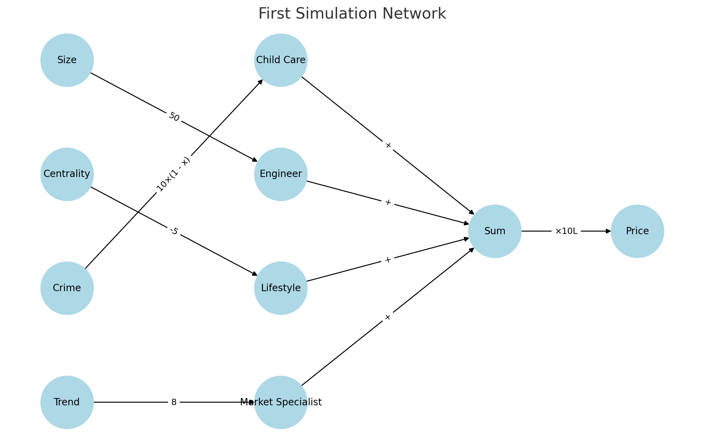
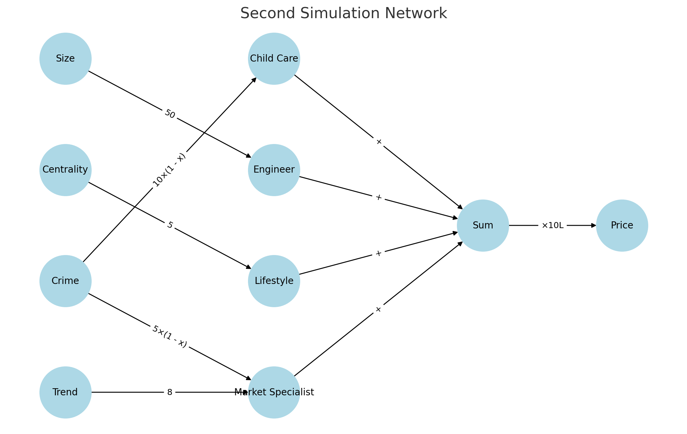
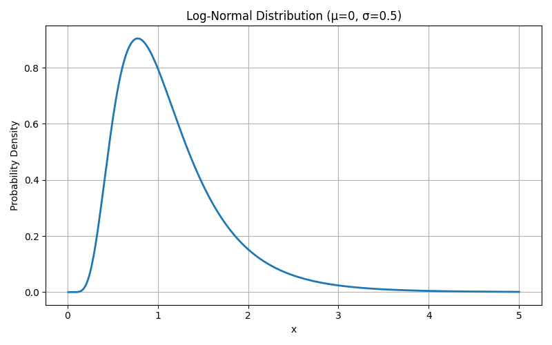
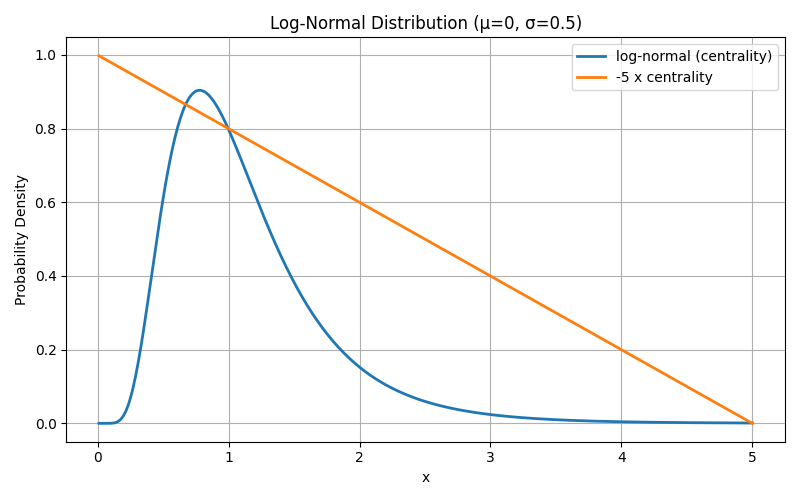
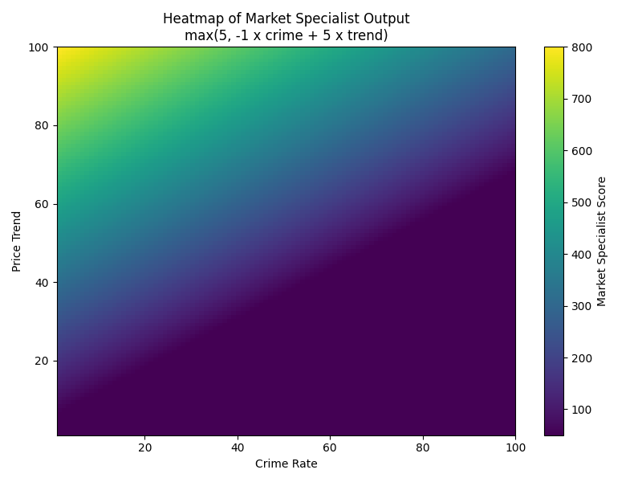
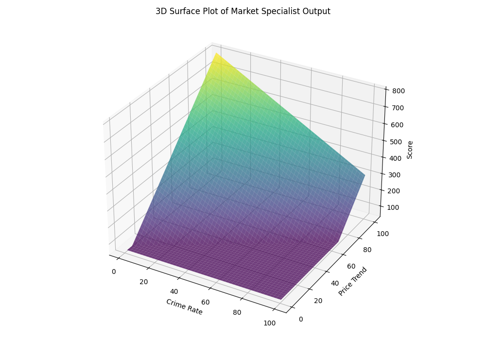
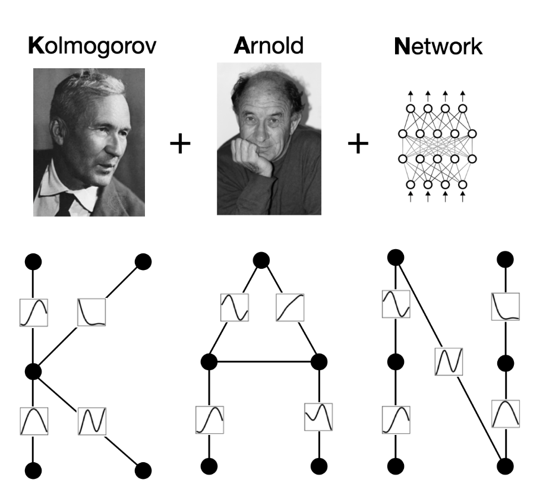
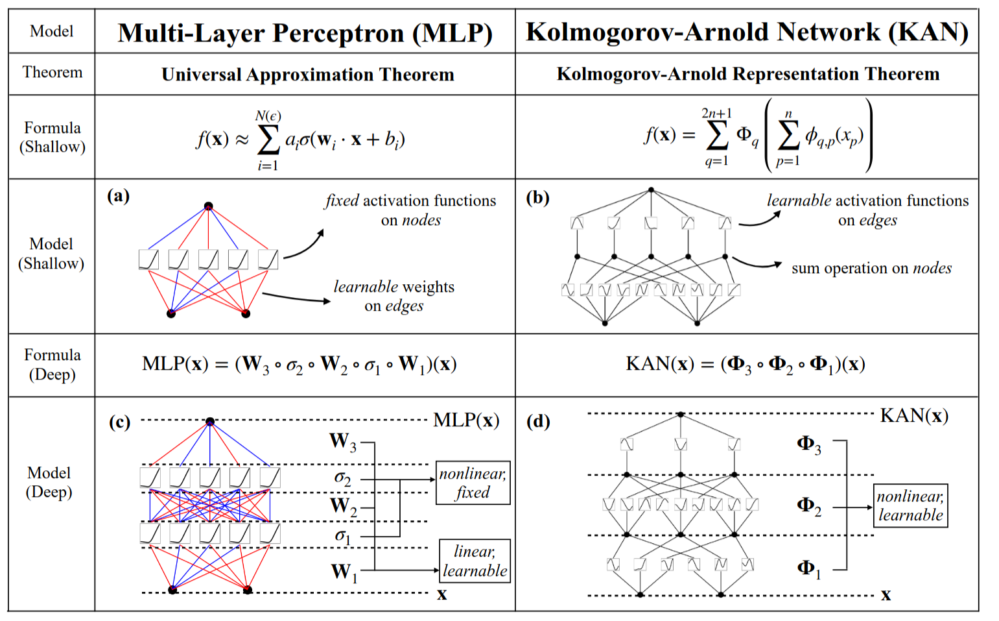

Created: 2025-05-30 Fri 18:12
The problem for the volunteer network to model is price prediction for houses
Dataset
| Property | House Size (sq.ft) | Centrality (km) | Crime Rate (/1000) | Price Trend (%) |
|---|---|---|---|---|
| A | 1000 | 2 | 50 | 10 |
| B | 800 | 8 | 175 | 5 |
| C | 1200 | 1 | 75 | 11 |
| D | 500 | 6 | 25 | 7 |
| E | 1500 | 3 | 150 | 3 |
crime ratehouse sizecentrality and crime ratecrime rate and price trendVerbal assessment based on best guesses.
Each volunteer is given a sheet of paper of instruction on what score value to shout out in a tabular form.
For example for centrality feature, the following tables means highly accessible houses get higher score and should be valued more.
| Input | Output |
| 500m | 10 |
| 1km | 8 |
| 5km | 4 |
| 10km | 1 |
crime ratehouse sizecentralityprice trendLifestyle and market analysts now consider more than one factor
centrality and crime ratecrime rate and price trendLets add activation functions. Activation function for
crime ratehouse sizecentrality and crime ratecrime rate and price trend| Property | House Size (sq.ft) | Centrality (km) | Crime Rate (/1000) | Price Trend (%) |
| A | 1000 | 2 | 50 | 10 |
| B | 800 | 8 | 175 | 5 |
| C | 1200 | 1 | 75 | 11 |
| D | 500 | 6 | 25 | 7 |
| E | 1500 | 3 | 150 | 3 |
| Property | Size | Centrality | Crime | Trend |
| A | 0.667 | 0.250 | 0.286 | 0.909 |
| B | 0.533 | 1.000 | 1.000 | 0.455 |
| C | 0.800 | 0.125 | 0.429 | 1.000 |
| D | 0.333 | 0.750 | 0.143 | 0.636 |
| E | 1.000 | 0.375 | 0.857 | 0.273 |
| Property | Child Care | Engineer | Lifestyle | Market Specialist | Sum | Price |
| A | 7.14 | 33.35 | 0.50 | 7.27 | 48.26 | ₹483L |
| B | 0.00 | 26.65 | 2.00 | 3.64 | 32.29 | ₹323L |
| C | 5.71 | 40.00 | 0.25 | 8.00 | 53.96 | ₹540L |
| D | 8.57 | 16.65 | 1.50 | 5.09 | 31.81 | ₹318L |
| E | 1.43 | 50.00 | 0.75 | 2.18 | 54.36 | ₹544L |

| Property | Child Care | Engineer | Lifestyle | Market Specialist | Sum | Price |
| A | 7.14 | 33.35 | 1.25 | 10.84 | 52.58 | ₹526L |
| B | 0.00 | 26.65 | 5.00 | 3.64 | 35.29 | ₹353L |
| C | 5.71 | 40.00 | 0.62 | 10.86 | 57.19 | ₹572L |
| D | 8.57 | 16.65 | 3.75 | 9.37 | 38.34 | ₹383L |
| E | 1.43 | 50.00 | 1.88 | 2.90 | 56.20 | ₹562L |

| Property | Child Care | Engineer | Lifestyle | Market Specialist | Sum | Price |
| A | 7.14 | 33.35 | 0.31 | 50.00 | 90.80 | ₹908L |
| B | 0.00 | 26.65 | 0.02 | 50.00 | 76.67 | ₹767L |
| C | 5.71 | 40.00 | 0.57 | 50.00 | 96.28 | ₹963L |
| D | 8.57 | 16.65 | 0.04 | 50.00 | 75.26 | ₹753L |
| E | 1.43 | 50.00 | 0.17 | 50.00 | 101.60 | ₹1016L |




smooth function, specified by the weights and the activation functioninput is multiplied by weight of the connection determines the influence on the outputactivation function is the one that decides

What if the activation is moved onto the dendrites in the network instead of neurons. 
https://github.com/KindXiaoming/pykan/blob/master/tutorials/Interp/Interp_1_Hello%2C%20MultKAN.ipynb